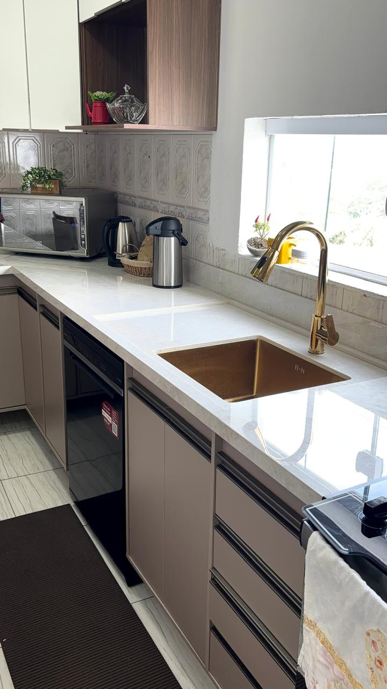
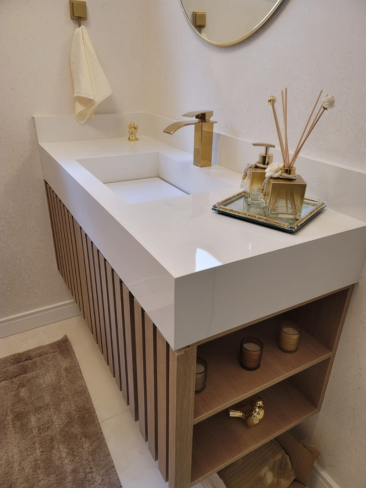
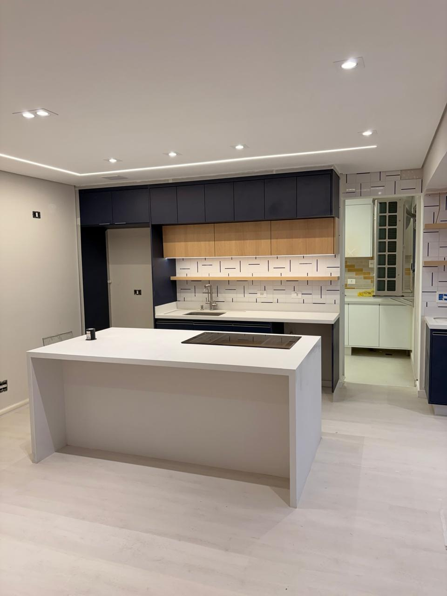
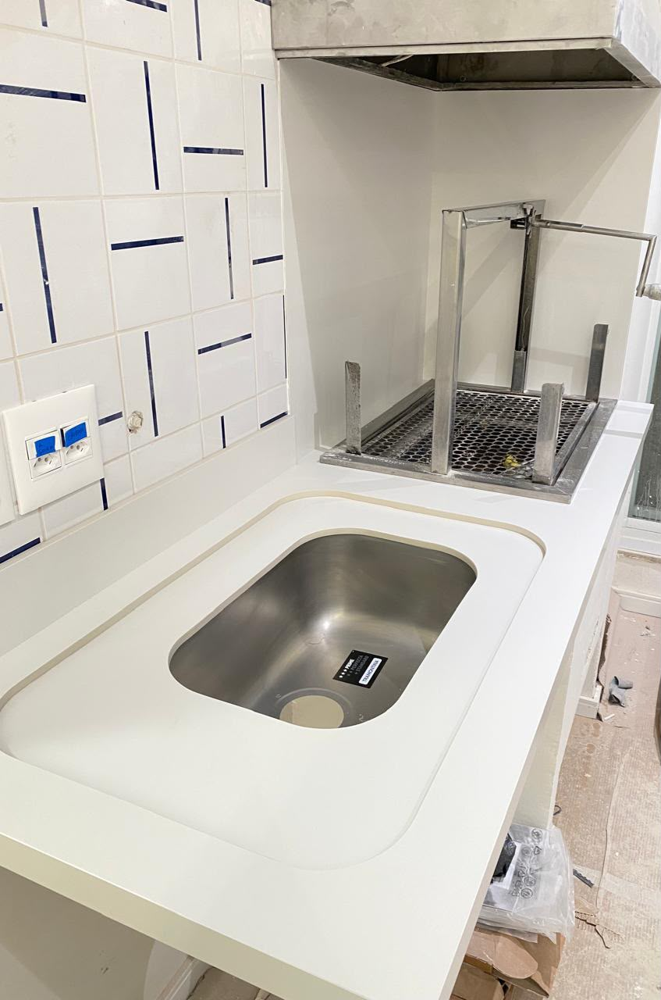
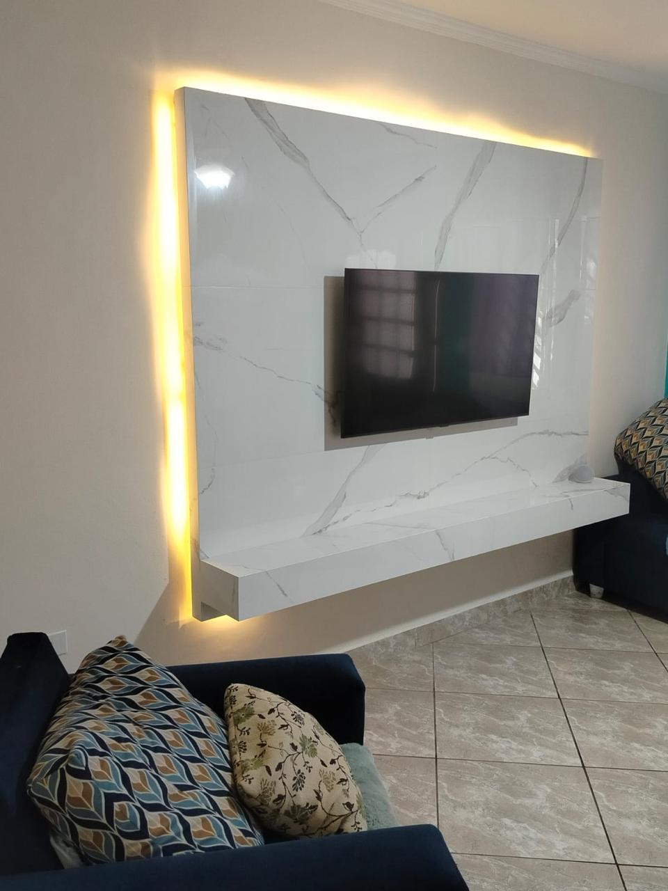
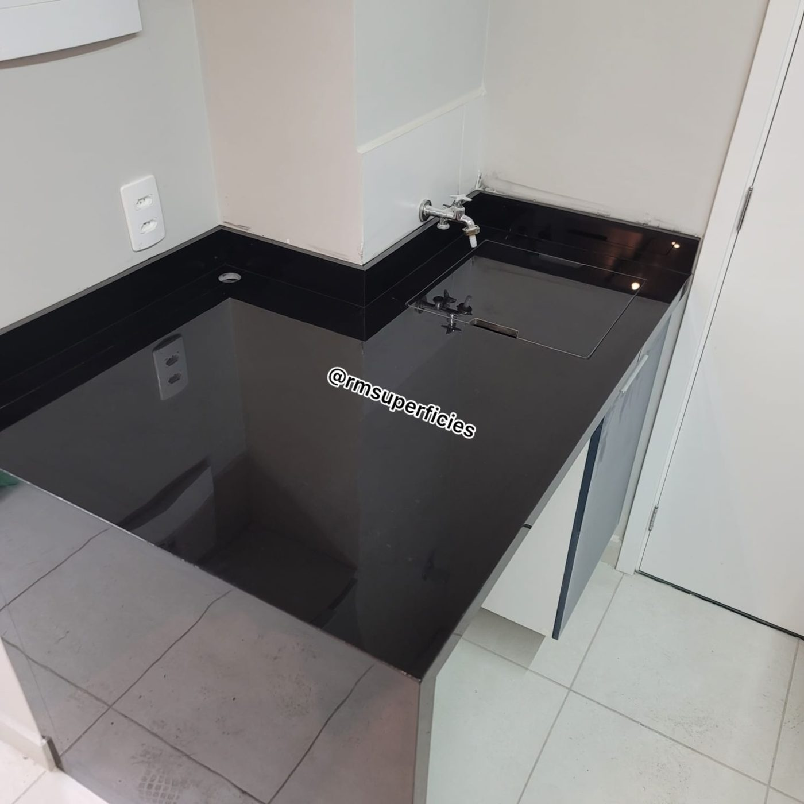
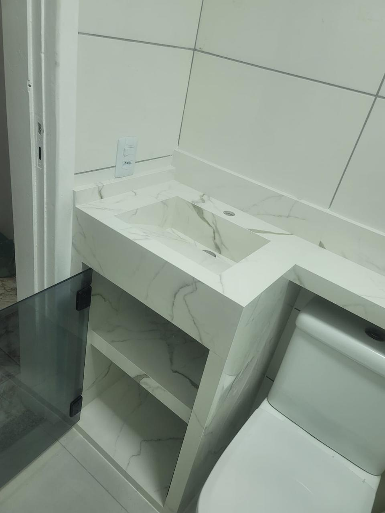
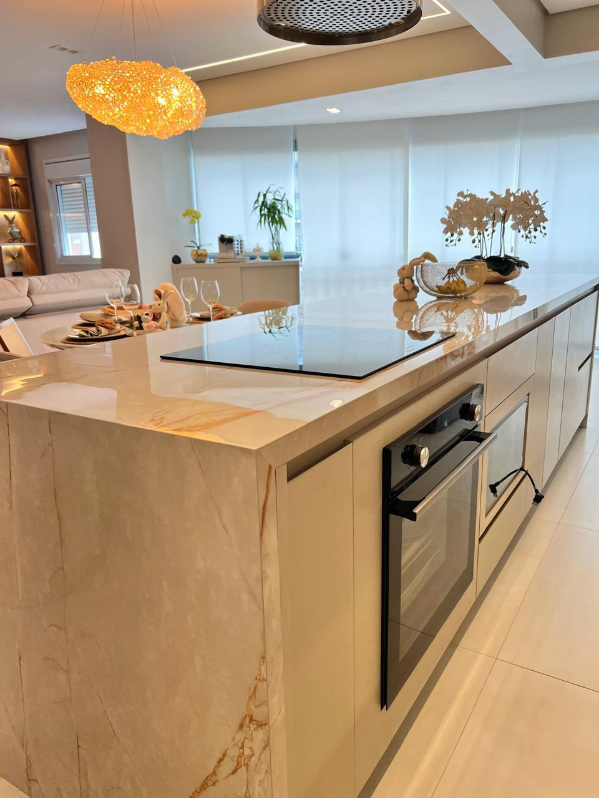
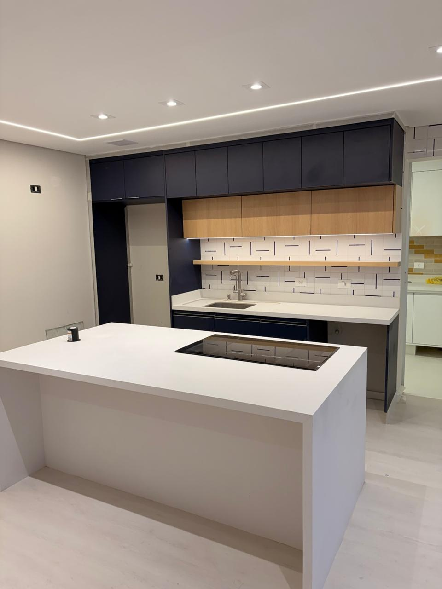

Pias e bancadas de cozinha
Cubas esculpidas, coladas em epóxi e com reforço interno. O serviço em que somos mais procurados e o que mais valoriza o ambiente.
Mais procuradoEmpresa familiar · Itaquaquecetuba, SP
Bancadas, pias, ilhas e lavatórios sob medida em quartzito, mármore, quartzo e lâmina ultracompacta. Medição técnica, entrega e instalação feitas pela nossa própria equipe.

O que fazemos
Executamos peças sob medida do projeto à instalação. Acabamentos pensados para valorizar seu ambiente e facilitar a rotina.

Cubas esculpidas, coladas em epóxi e com reforço interno. O serviço em que somos mais procurados e o que mais valoriza o ambiente.
Mais procurado
Banheiros e lavabos com cuba esculpida, frontão e acabamento reto ou boleado.

Peças de destaque no ambiente, com saias e encaixes calculados na medição.

Bancadas, revestimentos e acabamentos para a área externa.

Painéis em pedra com recorte para instalação e passagem de fiação.

Tanques esculpidos, tampos e nichos que aguentam o uso pesado do dia a dia.

Peças projetadas junto com a marcenaria e o restante do ambiente.


Soluções em pedra para diferentes ambientes, com peças e acabamentos sob medida para seu projeto.
Materiais & acabamentos
Pedras naturais e superfícies industrializadas, escolhidas com orientação da nossa equipe para o seu projeto.
Pedra natural com veios marcantes para bancadas, tampos e revestimentos sob medida.
Superfície ultracompacta para projetos que combinam estética e desempenho.
Elegância natural em peças exclusivas, incluindo opções como o mármore Paraná.
Versatilidade de cores e acabamentos para cozinhas, lavanderias e outros ambientes.
Uniformidade visual e variedade de tons para compor bancadas e lavatórios.
Superfícies industrializadas com diferentes cores e acabamentos para seu projeto.
Lâminas de grande formato para revestimentos e aplicações sob medida.
Lâmina ultracompacta para projetos e acabamentos sob medida.
Polido, acetinado, escovado e ripado. Acabamentos para valorizar cada detalhe do seu projeto.
Por que escolher a RM
Etapas alinhadas com você e formalizadas em contrato, da medição à instalação.
Orientação para escolher a superfície e o acabamento adequados ao seu ambiente.
Medição, entrega e instalação feitas por quem conhece e acompanha seu projeto.
Visite nosso espaço, conheça as opções e converse diretamente com quem executa sua peça.
Ficha técnica
Cada superfície reage de um jeito a mancha, calor e manutenção. É isso que a gente explica antes de você fechar o projeto, porque é isso que você vai conviver todo dia.
Portfólio · Projetos executados
Cozinhas, lavanderias e banheiros entregues pela nossa equipe, do corte à instalação.
Quem faz
Começamos na obra civil há cerca de 13 anos, fazendo elétrica, hidráulica, piso e gesso. Com o tempo nos especializamos em assentamento de porcelanato em banheiros e, em 2021, começamos a produzir bancadas em porcelanato. No fim de 2022 seguimos só com a porcelanataria e nos aprofundamos em reforços e colagem.
Em 2025 migramos para a marmoraria e trocamos a oficina por um galpão em avenida comercial, com estrutura para maquinário e chapas. Somos uma empresa familiar, com atendimento direto e uma equipe especializada que acompanha você da medição ao pós-venda.
Compromisso que continua depois da entrega
Uma empresa familiar, com contrato e atendimento próximo. Cuidamos da execução e seguimos ao seu lado no pós-venda.
Reputação
Olha só o que nossos clientes dizem sobre a experiência de comprar conosco.
Dúvidas frequentes
O quartzo é resistente a manchas, mas exige cuidados. Remova os líquidos assim que possível e siga as orientações de limpeza do fabricante para conservar a superfície.
Sim. Por ser uma pedra natural, o granito pode absorver líquidos. A necessidade e a frequência de impermeabilização dependem do material e do uso. Nossa equipe orienta os cuidados adequados para a sua peça.
A escolha considera o uso do ambiente, a exposição ao calor, os cuidados de manutenção e o acabamento desejado. Nossa equipe apresenta as opções e orienta você antes da execução.
Use sempre um apoio térmico. O contato direto com panelas quentes pode danificar a resina presente no quartzo e alterar a cor da superfície.
A execução inclui medição técnica, reforços e colagem adequados a cada material, além da conferência dos encaixes e da vedação na instalação. Nossa equipe acompanha todas as etapas e orienta os cuidados após a entrega.
A medição técnica, a entrega e a instalação são feitas pela nossa própria equipe. O pós-venda também é acompanhado pela mesma equipe, mantendo um atendimento direto do início ao fim.
Sim. Trabalhamos com contrato e oferecemos 1 ano de garantia sobre descolamento, vazamento e instalação, conforme as condições do contrato. Depois da entrega, enviamos pelo WhatsApp as orientações de limpeza e impermeabilização específicas para o material escolhido.
Onde estamos
Av. Italo Adami, 276 - Vila Zeferina, Itaquaquecetuba - SP, 08574-020.
Segunda a sexta das 8h às 18h30.